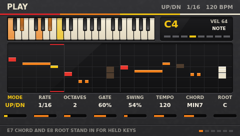
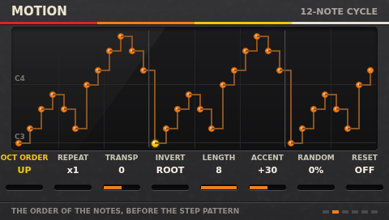
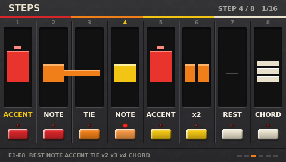
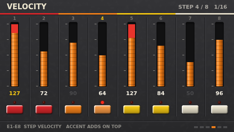
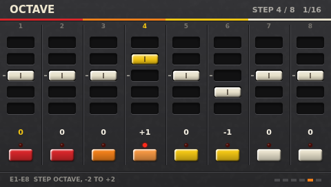
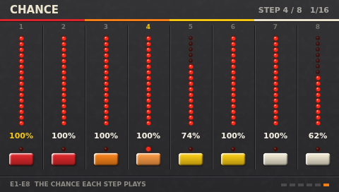
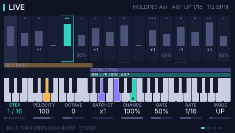

One tab for the whole part, in signal order: MIDI modules, the instrument, audio effects, the fader and the sends. Click a block and its editor opens underneath. The arpeggiator shows the CTRL49's six pages at once: what plays next and how it walks at the top, then PLAY and MOTION as two rows of the keyboard's eight knobs, and the eight-step pattern in columns under them, so column N is knob N.
The design this arpeggiator comes from (commit 5d72504, in the Rhythm Box 1980 look). The dock shows all six at once; the keyboard walks them with Page ◀ ▶. In that mockup knobs 7 and 8 on PLAY chose a chord and a root to stand in for held keys; in HoSTage the held keys do that, so the two knobs become Latch and Scale lock.






A module of its own beside the arpeggiator: every step carries a note. The grid is the melody; it follows the key you hold, so one finger transposes it. Under it, one row of bars at a time (here velocity), with the rest as marks, and the same eight knobs as the CTRL49's Live page. The chain is folded to one line to give the grid room.
The Live page already shows this lane on the keyboard. The dock's eight knobs are the page's eight, in the same order, and a step selected on either is selected on both. One change: knob 8 is Mode today, an arpeggiator setting; once the arpeggiator is its own module it becomes Notes, chord or free.
